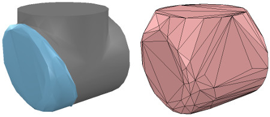
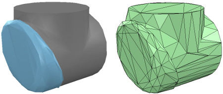
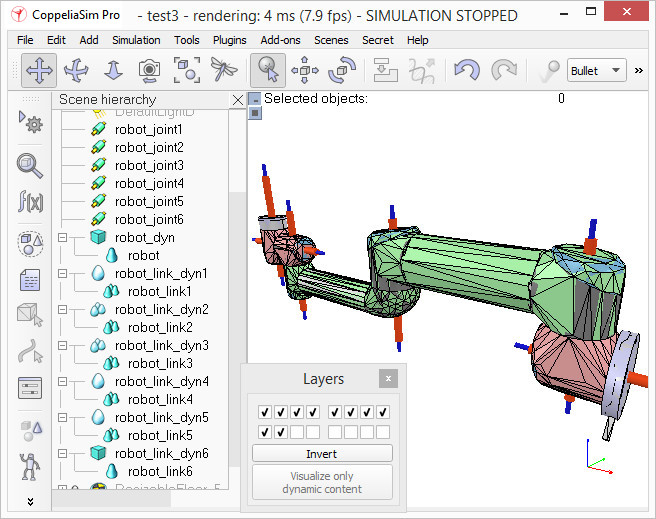

洪維辰 <<
Previous Next >> 曾信誠
劉冠志
Building the dynamic shapes
建立動態形狀
If we want our robot to be dynamically enabled, i.e. react to collisions, fall, etc., then we need to create/configure the shapes appropriately: a shape can be:
如果我們希望我們的機器人能夠動態啟用，即對碰撞，跌落等做出反應，那麼我們需要適當地創建/配置形狀：形狀可以是：
- dynamic or static: a dynamic (or non-static) shape will fall and be influences by external forces/torques. A static (or non-dynamic) shape on the other hand, will stay in place, or follow the movement of its parent in the scene hierarchy.
- 動態或靜態：動態（或非靜態）形狀會掉落並受到外力/扭矩的影響。 另一方面，靜態（或非動態）形狀將保持不變，或跟隨其父級在場景層次中的移動。
- respondable or non-respondable: a respondable shape will cause a collision reaction with other respondable shapes. They (and/or) their collider, will be influenced in their movement if they are dynamic. On the other hand, non-respondable shapes will not compute a collision response if they collide with other shapes.
- 可響應或不可響應：可響應形狀會引起與其他可響應形狀的碰撞反應。 如果它們是動態的，它們（和/或它們的對撞機）的運動將受到影響。 另一方面，不負責任的形狀如果與其他形狀發生碰撞，則不會計算碰撞響應。
Above two points are illustrated here. Respondable shapes should be as simple as possible, in order to allow for a fast and stable simulation. A physics engine will be able to simulate following 5 types of shapes with various degrees of speed and stability:
以上說明了兩點。 負責任的形狀應盡可能簡單，以實現快速穩定的仿真。 物理引擎將能夠以不同的速度和穩定性模擬以下5種類型的形狀：
- Pure shapes: a pure shape will be stable and handled very efficiently by the physics engine. The draw-back is that pure shapes are limited in geometry: mostly cuboids, cylinders and spheres. If possible, use those for items that are in contact with other items for a longer time (e.g. the feet of a humanoid robot, the base of a serial manipulator, the fingers of a gripper, etc.). Pure shapes can be created with [Menu bar --> Add --> Primitive shape].
- 純形狀：純形狀將穩定並由物理引擎非常有效地處理。 缺點是純形狀的幾何形狀受到限制：主要是長方體，圓柱體和球體。 如果可能的話，將其用於與其他物品接觸時間較長的物品（例如，人形機器人的腳，串行機械手的底座，抓手的手指等）。 可以使用[菜單欄->添加->基本形狀]創建純形狀。
- Pure compound shapes: a pure compound shape is a grouping of several pure shapes. It performs almost as well as pure shapes and shares similar properties. Pure compound shapes can be generated by grouping several pure shapes [Menu bar --> Edit --> Grouping/Merging --> Group selected shapes].
- 純複合形狀：純複合形狀是幾個純形狀的組合。 它的性能幾乎與純形狀一樣，並具有相似的特性。 可以通過對幾個純形狀進行分組來生成純複合形狀[菜單欄->編輯->分組/合併->分組所選形狀]。
- Convex shapes: a convex shape will be a little bit less stable and take a little bit more computation time when handled by the physics engine. It allows for a more general geometry (only requirement: it need to be convex) than pure shapes. If possible, use convex shapes for items that are sporadically in contact with other items (e.g. the various links of a robot). Convex shapes can be generated with [Menu bar --> Add --> Convex hull of selection] or with [Menu bar --> Edit --> Morph selection into convex shapes].
- 凸形狀：當由物理引擎處理時，凸形狀的穩定性會降低一些，而計算時間也會增加。 與純形狀相比，它允許使用更通用的幾何形狀（僅要求：它必須是凸形的）。 如果可能，將凸形用於偶爾與其他物品接觸的物品（例如，機器人的各個鏈接）。 可以使用[菜單欄->添加->選擇的凸包]或[菜單欄->編輯->將選擇變形為凸形]生成凸形。
- Compound convex shapes, or convex decomposed shapes: a convex decomposed shape is a grouping of several convex shapes. It performs almost as well as convex shapes and shares similar properties. Convex decomposed shapes can be generated by grouping several convex shapes [Menu bar --> Edit --> Grouping/Merging --> Group selected shapes], with [Menu bar --> Add --> Convex decomposition of selection...], or with [Menu bar --> Edit --> Morph selection into its convex decomposition...].
- 複合凸形狀或凸分解形狀：凸分解形狀是幾個凸形狀的組合。 它的性能幾乎與凸形相同，並具有相似的特性。 可以通過將多個凸形分組[菜單欄->編輯->分組/合併->分組選定的形狀]，並使用[菜單欄->添加->選擇的凸分解...]來生成凸分解形狀。 ]，或使用[菜單欄->編輯->將選擇變形到其凸分解...]。
- Random shapes: a random shape is a shape that is not convex nor pure. It generally has poor performance (calculation speed and stability). Avoid using random shapes as much as possible.
- 隨機形狀：隨機形狀是既非凸形也不是純淨的形狀。 它通常具有較差的性能（計算速度和穩定性）。 盡量避免使用隨機形狀。
So the order of preference would be: pure shapes, pure compound shapes, convex shapes, compound convex shapes, and finally random shapes. Make sure to also read this page. In case of the robot we want to build, we will make the base of the robot as a pure cylinder, and the other links as convex or convex decomposed shapes.
因此，優先順序為：純形狀，純複合形狀，凸形，複合凸形，最後是隨機形狀。 確保還閱讀此頁面。 對於要構建的機器人，我們將其基座設為純圓柱體，將其他鏈接設為凸形或凸形分解形狀。
We could use the dynamically enabled shapes also as the visible parts of the robot, but that would probably not look good enough. So instead, we will build for each visible shape we have created in the first part of the tutorial a dynamically enabled counterpart, which we will keep hidden: the hidden part will represent the dynamic model and be exclusively used by the physics engine, while the visible part will be used for visualization, but also for minimum distance calculations, proximity sensor detections, etc.
我們也可以將動態啟用的形狀用作機器人的可見部分，但是看起來可能不夠好。 因此，相反，我們將為在本教程第一部分中創建的每個可見形狀構建一個動態啟用的副本，該副本將保持隱藏狀態：隱藏部分將代表動態模型，並由物理引擎專用，而 可見部分將用於可視化，還用於最小距離計算，接近傳感器檢測等。
We select object robot, copy-and-paste it into a new scene (in order to keep the original model intact) and start the triangle edit mode. If object robot was a compound shape, we would first have had to ungroup it ([Menu bar --> Edit --> Grouping/Merging --> Ungroup selected shapes]) then merge the individual shapes ([Menu bar --> Edit --> Grouping/Merging --> Merge selected shapes]) before being able to start the triangle edit mode. Now we select the few triangles that represent the power cable, and erase them. Then we select all triangles in that shape, and click Extract cylinder. We can now leave the edit mode and we have our base object represented as a pure cylinder:
我們選擇對像機器人，將其複制並粘貼到新場景中（以保持原始模型不變），然後啟動三角形編輯模式。 如果對像機器人是複合形狀，我們首先必須將其取消組合（[菜單欄->編輯->分組/合併->取消組合所選形狀]），然後合併各個形狀（[菜單欄-> 在啟動三角形編輯模式之前，請編輯->分組/合併->合併選定的形狀]）。 現在，我們選擇代表電源線的幾個三角形，並將其刪除。 然後，選擇該形狀中的所有三角形，然後單擊“提取圓柱體”。 現在我們可以離開編輯模式，我們的基礎對象表示為純圓柱體：

[Pure cylinder generation procedure, in the triangle edit mode]
[純圓柱體生成過程，在三角形編輯模式下]
We rename the new shape (with a double-click on its name in the scene hierarchy) as robot_dyn, assign it to visibility layer 9, then copy it to the original scene. The rest of the links will be modelled as convex shapes, or compound convex shapes. We now select the first mobile link (i.e. object robot_link1) and generate a convex shape from it with [Menu bar --> Add --> Convex hull of selection]. We rename it to robot_link_dyn1 and assign it to visibility layer 9. When extracting the convex hull doesn't retain enough details of the original shape, then you could still manually extract several convex hulls from its composing elements, then group all the convex hulls with [Menu bar --> Edit --> Grouping/Merging --> Group selected shapes]. If that appears to be problematic or time consuming, then you can automatically extract a convex decomposed shape with [Menu bar --> Add --> Convex decomposition of selection...]:
我們將新形狀重命名（在場景層次中雙擊其名稱）為robot_dyn，將其分配給可見性層9，然後將其複製到原始場景。 其餘鏈接將建模為凸形或複合凸形。 現在，我們選擇第一個移動鏈接（即對象robot_link1），並使用[菜單欄->添加->選擇的凸包]從中生成凸形。 我們將其重命名為robot_link_dyn1並將其分配給可見性層9。當提取凸包並沒有保留足夠的原始形狀細節時，您仍然可以手動從其組成元素中提取多個凸包，然後將所有凸包與 [菜單欄->編輯->分組/合併->對選定形狀進行分組]。 如果這似乎有問題或很耗時，則可以使用[菜單欄->添加->選擇的凸分解...]自動提取凸分解的形狀：

[Original shape, and convex shape pendant]
[原始形狀和凸形吊墜]

[Original shape, and convex decomposed shape pendant]
[原始形狀和凸形分解形狀吊墜]
We now repeat the same procedure for all remaining robot links. Once that is done, we attach each visible shape to its corresponding invisible dynamic pendant. We do this by selecting first the visible shape, then via control-click selecting its dynamic pendant then [Menu bar --> Edit --> Make last selected object parent]. The same result can be achieved by dragging the visible shape onto its dynamic pendant in the scene hierarchy:
現在，我們對所有剩餘的機器人鏈接重複相同的過程。 完成後，我們將每個可見的形狀附加到其相應的不可見的動態吊墜上。 為此，我們先選擇可見的形狀，然後按住Control鍵並單擊以選擇其動態吊墜，然後選擇[菜單欄->編輯->將最後選擇的對象設為父對象]。 通過將可見形狀拖動到場景層次中的動態吊墜上，可以實現相同的結果：

[Visible shapes attached to their dynamic pendants]
[可見的形狀附加到動態吊墜上]
We still need to take care of a few things: first, since we want the dynamic shapes only visible to the physics engine, but not to the other calculation modules, we uncheck all object special properties for the dynamic shapes, in the object common properties.
我們仍然需要注意一些事項：首先，由於我們希望動態形狀僅對物理引擎可見，而對其他計算模塊不可見，因此在對象通用屬性中取消選中動態形狀的所有對象特殊屬性。
Then, we still have to configure the dynamic shapes as dynamic and respondable. We do this in the shape dynamics properties. Select first the base dynamic shape (i.e. robot_dyn), then check the Body is respondable item. Enable the first 4 Local respondable mask flags, and disable the last 4 Local respondable mask flags: it is important for consecutive respondable links not to collide with each other. For the first mobile dynamic link in our robot (i.e. robot_link_dyn1), we also enable the Body is respondable item, but this time we disable the first 4 Local respondable mask flags, and enable the last 4 Local respondable mask flags. We repeat the above procedure with all other dynamic links, while always alternating the Local respondable mask flags: once the model will be defined, consecutive dynamic shapes of the robot will not generate any collision response when interacting with each other. Try to always end up with a construction where the dynamic base of the robot, and the dynamic last link of the robot have only the first 4 Local respondable mask flags enabled, so that we can attach the robot to a mobile platform, or attach a gripper to the last dynamic link of the robot without dynamic collision interferences.
然後，我們仍然必須將動態形狀配置為動態且可響應的。我們在形狀動力學屬性中執行此操作。首先選擇基本動態形狀（即robot_dyn），然後檢查“主體是可響應的”項。啟用前四個“本地可響應掩碼”標誌，並禁用後四個“本地可響應掩碼”標誌：對於連續的可響應鏈接不要彼此衝突非常重要。對於我們機器人中的第一個移動動態鏈接（即robot_link_dyn1），我們還啟用了“身體可響應”項，但是這次我們禁用了前4個“本地可響應掩碼”標誌，並啟用了後4個“本地可響應掩碼”標誌。我們對所有其他動態鏈接重複上述過程，同時始終交替使用Local Responsible Mask標誌：一旦定義了模型，則連續的機器人動態形狀在彼此交互時不會產生任何碰撞響應。嘗試始終以這樣一種構造結束：機器人的動態基礎和機器人的動態最後一個鏈接僅啟用了前4個“本地可響應掩碼”標誌，以便我們可以將機器人附加到移動平台，或附加一個抓取器連接到機器人的最後一個動態鏈接，而沒有動態碰撞干擾。
Finally, we still need to tag our dynamic shapes as Body is dynamic. We do this also in the shape dynamics properties. We can then enter the mass and inertia tensor properties manually, or have those values automatically computed (recommended) by clicking Compute mass & inertia properties for selected convex shapes. Remember also this and that dynamic design considerations. This dynamic base of the robot is a special case: most of the time we want the base of the robot (i.e. robot_dyn) to be non-dynamic (i.e. static), otherwise, if used alone, the robot might fall during movement. But as soon as we attach the base of the robot to a mobile platform, we want the base to become dynamic (i.e. non-static). We do this by enabling the Set to dynamic if gets parent item, then disabling the Body is dynamic item. Now run the simulation: all dynamic shapes, except for the base of the robot, should fall. That attached visual shapes will follow their dynamic pendants.
最後，我們仍然需要將動態形狀標記為“身體是動態的”。 我們也在形狀動力學屬性中執行此操作。 然後，我們可以手動輸入質量和慣性張量屬性，或者通過單擊“計算選定凸形的質量和慣性屬性”來自動計算（推薦）那些值。 還請記住這一點以及該動態設計注意事項。 機器人的這種動態基座是一種特殊情況：大多數時候，我們希望機器人的基座（即robot_dyn）是非動態的（即靜態），否則，如果單獨使用，則機器人可能會在運動過程中掉落。 但是，一旦我們將機器人的底座連接到移動平台上，我們就希望底座變得動態（即非靜態）。 我們通過啟用“如果獲取父項時設置為動態”項，然後禁用“主體為動態”項來做到這一點。 現在運行仿真：除了機器人的基座之外，所有動態形狀都應下降。 附加的視覺形狀將跟隨其動態吊墜。
洪維辰 <<
Previous Next >> 曾信誠